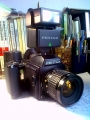

807110842019-02-03 09:195 分
操作性 5.00功能性 5.00美观性 5.00趣味性 5.00耐用性 5.00性价比 5.00
macrossplus2016-02-29 23:034.75 分
操作性 5.00功能性 5.00美观性 4.50趣味性 4.50耐用性 5.00性价比 4.50
tiepo2014-06-13 08:285 分
操作性 5.00功能性 5.00美观性 5.00趣味性 5.00耐用性 5.00性价比 5.00
铁凤凰2012-01-08 19:544.5 分
操作性 4.50功能性 4.00美观性 4.00趣味性 4.50耐用性 5.00性价比 5.00
yaxmm2011-06-16 00:244.83 分
操作性 4.50功能性 5.00美观性 5.00趣味性 4.50耐用性 5.00性价比 5.00

迅2008-08-04 23:265 分
操作性 5.00功能性 5.00美观性 5.00趣味性 5.00耐用性 5.00性价比 5.00
karry2008-02-29 18:584.5 分
操作性 4.50功能性 4.50美观性 4.00趣味性 4.00耐用性 5.00性价比 5.00
flying_camera2006-12-13 10:214.75 分
操作性 4.50功能性 5.00美观性 4.50趣味性 4.50耐用性 5.00性价比 5.00
天涯色侠2006-10-11 15:094.83 分
操作性 5.00功能性 5.00美观性 4.50趣味性 4.50耐用性 5.00性价比 5.00
yongyi2006-06-07 17:504.75 分
操作性 5.00功能性 4.50美观性 4.50趣味性 4.50耐用性 5.00性价比 5.00
猪头唛2006-05-31 21:044.58 分
操作性 4.50功能性 4.50美观性 4.50趣味性 4.50耐用性 4.50性价比 5.00
国仁2006-01-24 23:284.33 分
操作性 4.00功能性 4.50美观性 4.50趣味性 4.00耐用性 4.00性价比 5.00
血色残阳2005-07-28 06:134.75 分
操作性 4.50功能性 4.50美观性 5.00趣味性 5.00耐用性 4.50性价比 5.00
乐手6132004-12-26 02:284.42 分
操作性 4.50功能性 4.50美观性 4.50趣味性 4.50耐用性 4.00性价比 4.50
天狼2004-03-15 12:234.67 分
操作性 4.50功能性 4.00美观性 4.50趣味性 5.00耐用性 5.00性价比 5.00
xxy2004-02-04 17:454.5 分
操作性 4.00功能性 5.00美观性 5.00趣味性 3.00耐用性 5.00性价比 5.00
大漠人2004-01-08 23:202.75 分
操作性 3.00功能性 3.00美观性 3.00趣味性 3.00耐用性 3.00性价比 1.50
xg10042003-10-19 23:144.5 分
操作性 4.50功能性 4.50美观性 4.50趣味性 4.50耐用性 4.50性价比 4.50
dorati2003-09-14 11:294.75 分
操作性 5.00功能性 4.00美观性 4.50趣味性 5.00耐用性 5.00性价比 5.00
1672003-08-14 18:564.67 分
操作性 4.50功能性 4.50美观性 5.00趣味性 4.00耐用性 5.00性价比 5.00
鹿回头2003-04-11 11:024.33 分
操作性 4.50功能性 4.50美观性 3.50趣味性 3.50耐用性 5.00性价比 5.00
胖豆豆2002-08-04 21:574.83 分
操作性 5.00功能性 5.00美观性 5.00趣味性 5.00耐用性 5.00性价比 4.00